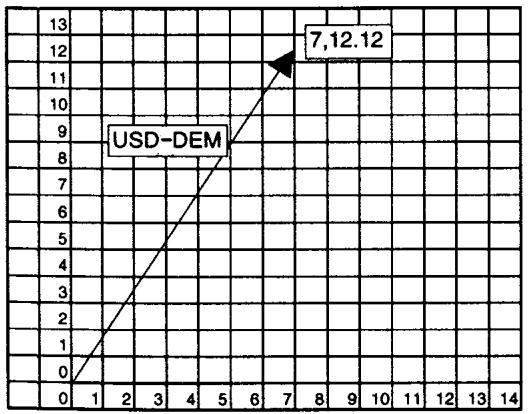
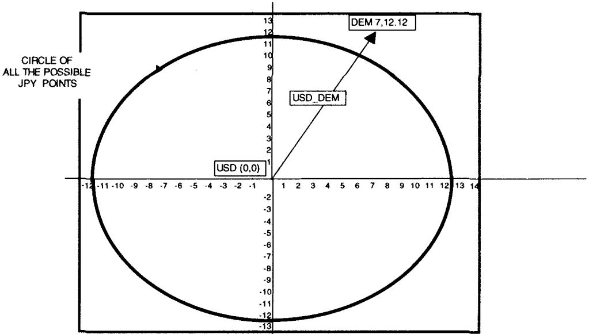
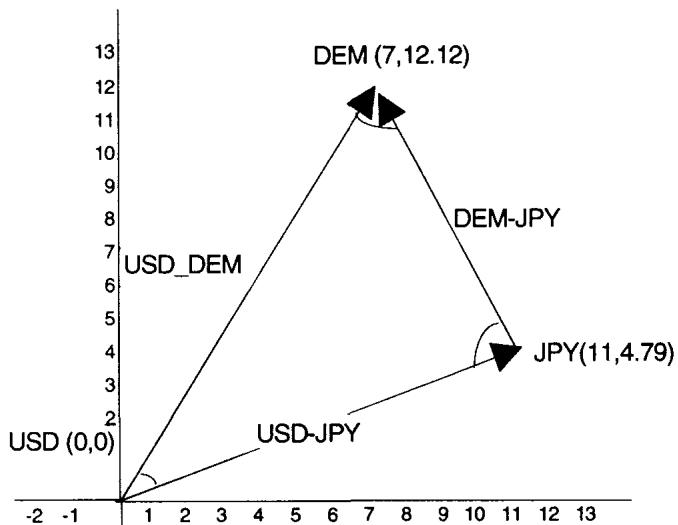
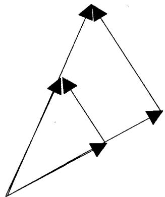
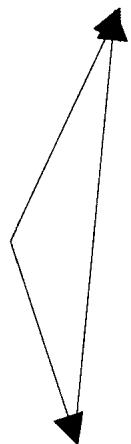
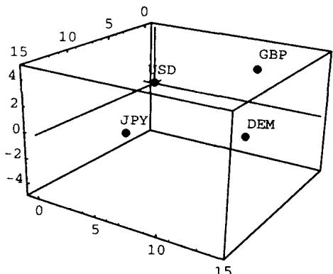
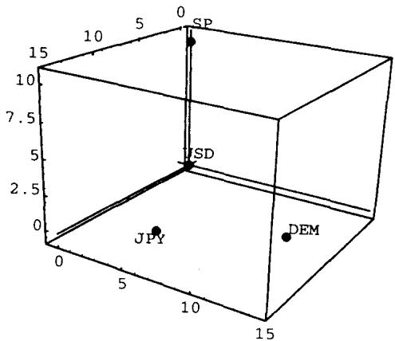

模块 D：相关性三角，一个图形化案例（Correlation Triangles: A Graphical Case Study）
导读：本模块要解决的问题
这是为多资产期权分析做的准备，分析限定在欧式期权所隐含的波动率与相关性上。Module C 讲清了 numeraire 如何决定 drift 和盈亏方向，Module D 把同一组货币放进一个欧几里得空间：把每个资产画成一个点，点与点之间的"距离"就是这对货币的隐含波动率，而两条边的夹角余弦就是相关性。整张图是一组点的宇宙，无套利要求所有波动率和相关性都服从同一套点间度量。
对一个已经熟悉内积空间、Gram 矩阵、协方差半正定约束的读者，本模块的几何很轻。值得停下来体会的是 Taleb 把抽象的"波动率/相关性矩阵一致性"翻成的一张可以用眼睛看的图，以及它背后两条命题：
- 隐含波动率是一个度量（metric）。 满足非负、对称、三角不等式三条公理，所以可以当成距离嵌进欧氏空间。波动率自己对自己为零（现金以现金计无波动），（呼应 Module C 的可逆性），（三角不等式）。
- 相关性是夹角余弦。 以 numeraire 为原点，两条边 、 的相关性等于它们夹角的余弦。这把"相关性矩阵必须半正定"翻译成"这组向量必须能嵌进欧氏空间"，也让波动率/相关性套利变成"某个点能不能移动"的几何问题。
笔记沿原文顺序展开：把资产表示成空间中的点、波动率作为度量、三货币世界的三角、相关性三角规则、what-if 分析（相关性不变 vs 波动率不变）、加入第四货币与 SP500、以及隐含相关性曲线的构造。
一、把资产表示成欧氏空间中的点
为指定到期交割的资产（是资产本身，不是报价对）可以表示成欧氏空间里的点。点与点之间的"距离"对应它们之间的隐含波动率。这个方法便于理解波动率之间的关系，以及相关性对所有可能配对的影响。
这里"资产"的定义是：一个需要与另一个单位配对才能交易的单位。所以玉米可以是一个资产，黄金是另一个，美元是第三个。完全可以设想一份"玉米兑黄金"的期权，对那些本币是玉米或黄金的人而言，它就是一个香草产品。
用货币来分析这件事总是更容易，因为货币非常适合 numeraire 变换。一个货币交易员可以把美元-日元期权和日元-蒙古图格里克期权放在同等地位上看。货币按定义就是 numeraire，但任何别的单位也可以是，包括棒球票，对那些满脑子都是棒球、把一切都折算成棒球票当量的人来说。
波动率作为度量函数
一对货币（给定到期）的隐含波动率，用它们在欧氏空间中坐标所代表的两点之间的距离来度量。二维下，坐标 与 的两资产距离为
数学较真者很容易看出，这样定义的波动率函数满足度量（metric，或距离函数）的条件。于是 表示可交易对 的波动率，即"以 为单位的 "：
- 若 ，则 严格为正；且 ，即资产以自身为 numeraire 表示时波动率为零。看现金以现金计波动率为 0 就够了。
- ， 以 为 numeraire 的波动率等于 以 为 numeraire 的波动率。
- 在任何时候都小于或等于 。
维空间下，坐标 与 的距离为
理论映射：为什么波动率天然是欧氏距离
把这三条公理接回定价理论，它们是恒等式，而非松散的类比。两资产对数收益 、 的方差就是各自对 numeraire 的波动率平方，而对 这个交叉对，
这正是把 、 看成两个向量时，差向量 的长度平方（余弦定理）。所以"波动率 = 距离"等价于"把每个资产的对数收益当成内积空间里的一个向量、向量长度是波动率、内积是协方差"。第三条三角不等式 的金融含义是：用中间货币 三角分解（triangulate）出来的合成波动率，不能低于直接对的波动率，否则就有跨对套利。、 则分别对应 Module C 的"自身 numeraire 无风险"和"价格可逆"。
二、三货币世界与三角
先设一个月 DEM 波动率是欧氏空间（一个月空间）里坐标为 的点，并取 USD 为 。为简单起见，总是建议把 numeraire（计算盈亏所用的商品）放在 。

按市场记法， 是点 与点 之间的度量，，即 USD-DEM 波动率 14%（为简化全例乘以 100）。同理 也是 14%。
接着加入 JPY。设 USD-JPY 在 12% 波动率交易，所以 USD-JPY 是长度 12 的向量。但把它放上图有许多种可能，因为坐标可以是绕 半径 12 的整个圆。

坐标任意设为圆上一点 。 有无穷多组合，取 ，则 ，JPY 点为 。
现在空间里有三个点：、、。这三点应能提供额外信息。按公式 (1)，

注意图 D.3 的三角等式在日元放在另一侧（坐标 ）时同样满足。这对应一个自由度：固定两条边长，第三个点有两个镜像解。
理论映射：选 作 numeraire 与第三点的镜像自由度
把 numeraire 放原点，是因为度量只关心相对位置，整体平移不改变任何距离和夹角。所以可以把计盈亏的那个资产钉在 ，其余资产的坐标就是它们对 numeraire 的对数收益向量。JPY 落在半径 12 的圆上、且固定 后仍有 两解，对应"DEM-JPY 相关性"的两个可能值。这就是为什么只给三个波动率（三条边）还不能完全确定相关性结构：一个 资产系统的波动率/相关性，需要 个波动率把所有点的相对位置钉死，否则就留有旋转/镜像自由度。
三、相关性三角规则
在做 what-if 之前先看相关性。众所周知，波动率边段之间的相关性是它们夹角的余弦。设点 为 numeraire：
是两边段的夹角，点积（内积），度量 。
二维下展开成相关性三角规则：
容易看出 ，即"以 为 numeraire 量度的 和 之间的相关性"等于"以 、 分别为 numeraire 量度的 之间的相关性"。
回到例子，算 USD-DEM 段与 USD-JPY 段的相关性：
以及 等其余配对。
理论映射：cosine = correlation 就是 Gram 矩阵，PSD 就是可嵌入性
相关性等于夹角余弦，是内积空间里最基本的恒等式 ，其中 、 是去 numeraire 后的对数收益向量。把所有这些向量两两做内积，得到的就是协方差矩阵 ，归一化后是相关性矩阵，它正是这组向量的 Gram 矩阵。线性代数告诉我们：一个对称矩阵是某组向量的 Gram 矩阵，当且仅当它半正定（PSD）。这一句把第 22 章那条"相关性矩阵必须半正定、否则相当于负波动率"的规则，几何化成了"这组点必须能真实地嵌进欧氏空间"。 自动保证 。而 这条对称性，对应换 numeraire 时夹角不变，因为 ，两个向量同时反向，夹角不变。
四、What-if：相关性不变 vs 波动率不变
要让相关性保持不变，各边的波动率应按相同百分比增加（图 D.4）。这会导致第三个波动率也同比增加。

有点难想象：DEM-JPY 的波动率现在增加了，仅仅因为它的两个成分对美元的波动率都涨了。Taleb 说他花了不少宝贵时间去说服不愿接受这个观念的同事。
进一步，当第三条边旋转时（图 D.5），各边波动率保持不变，而相关性改变。

理论映射：相似缩放保角、旋转保长，两个独立自由度
这两张图把相关性矩阵的两个独立变化方向分开了。图 D.4 是整个三角形的相似放缩：所有边长按同一比例变大，形状不变，所以所有夹角（相关性）不变。代数上，，若 同比放大 倍而 不变，则 也放大 倍。所以"两条腿波动率都涨、交叉对波动率必须跟涨"是三角形相似的必然，谈不上反直觉，否则三角不等式被破坏、出现套利。图 D.5 则是固定边长、旋转第三个点：长度（边波动率）不变，但夹角（相关性）随之改变。一个三角形由三条边唯一确定（SSS 全等），所以一旦三个波动率定死，相关性也就定死了，反过来固定两条边长旋转第三点，必然同时改变它与另两点的角度。这正是"波动率和相关性不是独立可调的，它们被同一套点间度量锁在一起"。
五、加入第四货币与 SP500
要给这个世界加一个货币，就要把维数加 1。纳入 GBP 需要给所有点加一维。用 坐标系（图 D.6）：

如果再加 SP500，就有五个单位、需要四维表示。但为表示目的，每次可以消去一个单位。交易员表示 USD、SP、DEM、JPY 子宇宙（去掉 GBP），相应地去掉第三行，用 表示，以迁就"即便交易员也只能在三维里看世界"这一事实：
SP500-USD 对与任何其他边段都不相关。读者可以作为练习验证。含义很明显： 推出 ，于是 SP-USD 与 JPY-USD、SP-USD 与 DEM-USD 之间都是直角。

结果： 波动率的世界可以表示成一个点的宇宙。无波动率/相关性套利要求市场上所有波动率（及由之产生的相关性）满足同一套点间度量。任何把一个点向左、右、上、下移动的操作，都应导致套利。
理论映射：维数 = 资产数减一，正交 = 独立，无套利 = 一致嵌入
每加一个资产要加一维，是因为 个资产去掉 numeraire 后是 个向量，张成至多 维空间。SP500 与各货币正交（坐标 ，与落在前两维的货币点积为零）对应一个干净的金融判断：股指对美元的波动，与马克、日元对美元的波动不相关，所以它需要一根全新的、垂直的坐标轴。正交即独立，这是 Gram 矩阵分块对角的几何形态。最关键的是最后那句"任何移动一个点都导致套利"，它把整套隐含波动率曲面的无套利条件压缩成一句几何陈述：市场报出的所有 个波动率，必须能一致地嵌入同一个欧氏点配置。一旦某个交叉对的报价波动率与三角分解出来的不符，就等于要把一个点移到违反三角不等式的位置，那里存在三角套利（triangular arbitrage）。这就是相关性矩阵 PSD 约束的可视化：点配置存在 ⟺ Gram 矩阵半正定 ⟺ 无波动率套利。
六、计算隐含相关性曲线
有了不同的边，就能构造一条相关性曲线，即三角规则隐含的相关性（表 D.1，DEM-FRF，来源 Tradition Financial Services，1995 年 10 月 30 日收盘价）：
| 期限 | DM 波动率 | FF 波动率 | DM/FF 波动率 | 隐含相关性 |
|---|---|---|---|---|
| 1m | 13.40 | 10.30 | 4.80 | 0.95 |
| 3m | 13.35 | 10.45 | 5.35 | 0.93 |
| 6m | 13.25 | 10.45 | 5.70 | 0.91 |
| 9m | 13.15 | 10.45 | 5.70 | 0.91 |
| 12m | 13.10 | 10.50 | 5.70 | 0.91 |
理论映射：从三个可观测波动率反解隐含相关性
这张表是相关性三角规则的实际用法。DEM-USD、FRF-USD 直接从期权市场报价可得，DEM-FRF（交叉对）也可观测，于是隐含相关性由余弦定理反解：
以 1 个月为例，，与表中一致。这条隐含相关性曲线（implied correlation curve）是交易多资产期权的核心输入：它不来自历史时间序列，而来自三个期权市场的隐含波动率，因此反映的是市场前瞻定价的相关性，而非已实现相关性。期限越长相关性略降并趋稳（从 0.95 降到 0.91），是因为短期 DEM 与 FRF 受欧洲汇率机制（ERM）绑定更紧，长期不确定性让交叉对波动率 相对各腿放大、隐含相关性下降。这给多资产期权台一个可直接消费的 correlation vega 输入，呼应第 22 章。
七、本模块综述：理论与实务的对照
| Taleb 的实务命题 | 对应的理论命题 |
|---|---|
| 隐含波动率是点间距离 | 度量公理； 即余弦定理 |
| 、 | 自身 numeraire 无风险；价格可逆（Module C） |
| 三角不等式 = 无三角套利 | |
| 相关性 = 边段夹角余弦 | ，Gram 矩阵 |
| 相关性矩阵须有效 | Gram 矩阵半正定 ⟺ 点可嵌入欧氏空间 |
| 第三点有镜像自由度 | 固定两边长，第三点有 两解 |
| 两腿波动率同比涨，交叉对必跟涨 | 三角形相似放缩保角 |
| 边长固定、旋转改变相关性 | SSS 全等：三波动率定死则相关性定死 |
| 加一个资产加一维 | 资产去 numeraire 张成 维 |
| SP500 与各货币正交 | 正交即独立，Gram 分块对角 |
| 移动任一点即套利 | 无套利 = 所有报价一致嵌入同一点配置 |
| 隐含相关性曲线 | 由三个隐含波动率经余弦定理反解 |
核心观点
第一，把隐含波动率当成欧氏距离、把相关性当成夹角余弦，是合法的，因为波动率满足度量三公理、相关性满足内积的余弦关系。它是 Gram 矩阵的几何，谈不上只是教学比喻。
第二，波动率和相关性不是独立可调的量。三个波动率一旦定死，三角形（SSS）就定死，相关性随之确定。相似放缩保角、旋转改角，是它们仅有的两种独立变化方式。
第三，无套利等价于一致嵌入。市场所有 个波动率必须能放进同一个点配置里，等价于相关性矩阵半正定。任何点的移动违反三角不等式，就是三角套利。
第四，隐含相关性曲线是可操作的。从三个期权市场的隐含波动率，用余弦定理就能反解出市场前瞻的相关性，直接喂给多资产期权台。
一句话收束
本模块最该记住的一句：把每个资产画成欧氏空间里的一个点、点距是隐含波动率、夹角余弦是相关性，于是整张波动率/相关性表就是一组向量的 Gram 矩阵——它半正定、能嵌入，就无套利；任何一个点被挪到违反三角不等式的位置，那里就站着一笔三角套利。